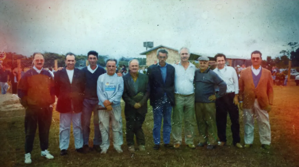
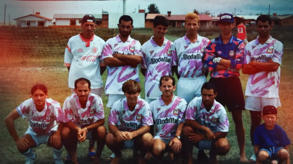
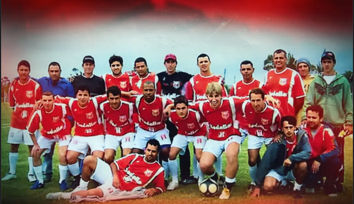

Onde a Nossa História Começou
A Raiz de Tudo (Origem e Fundador)
Tudo começou em 1994, quando um grupo de amigos e apaixonados por futebol decidiu que a nossa comunidade precisava de uma camisa para chamar de sua. Liderados por [Nome do Fundador ou dos primeiros diretores], o União da Vila F.C. nasceu não apenas para disputar campeonatos, mas para ser um símbolo de união e orgulho para Arroio do Sal. Desde os primeiros toques na bola no terrão até as grandes finais, o espírito de garra e dedicação sempre foi a nossa principal marca em campo.

Nosso Caldeirão: Estádio [Nome do Estádio/Campo]
A Nossa Casa (O Estádio)
Muito mais que um campo, o [Nome do Estádio] é a nossa verdadeira casa. É aqui que a nossa torcida canta, vibra e empurra o time rumo à vitória. Com capacidade para [Número aproximado ou 'centenas de apaixonados'], cada palmo desse gramado carrega a história de suor e glória dos nossos jogadores. Em dia de jogo do União, o clima na beira do alambrado é inconfundível: é dia de festa na cidade.
Nossas Maiores Glórias
Esquadrões de Ouro nossos Times Campeões
Campeão [Nome do Campeonato] - Ano [Ex: 2023]
Uma campanha inesquecível! Sob o comando do técnico [Nome do Técnico] e com gols decisivos de [Nome do Artilheiro/Jogador Destaque], o União da Vila levantou a taça após uma final emocionante contra o [Nome do Time Rival]. Um elenco que ficou marcado para sempre na memória do nosso torcedor.

Campeão [Nome do Campeonato] - Ano [Ex: 2023]
Uma campanha inesquecível! Sob o comando do técnico [Nome do Técnico] e com gols decisivos de [Nome do Artilheiro/Jogador Destaque], o União da Vila levantou a taça após uma final emocionante contra o [Nome do Time Rival]. Um elenco que ficou marcado para sempre na memória do nosso torcedor.
Campeão [Nome do Campeonato] - Ano [Ex: 2023]
Uma campanha inesquecível! Sob o comando do técnico [Nome do Técnico] e com gols decisivos de [Nome do Artilheiro/Jogador Destaque], o União da Vila levantou a taça após uma final emocionante contra o [Nome do Time Rival]. Um elenco que ficou marcado para sempre na memória do nosso torcedor.
